当“正能量“和“丧”齐头并进，当人们越来越少地使用“忧愁”、“悲伤”、“痛苦”、“虚无”这些词汇描述自己，当把越来越多的人和现象被冠以“抑郁症〞的标签，你会发现 ，抑郁症同时作为疾病分类标签和文化习语影响着我们，我们也在重塑抑郁症的内涵和外延。
抑郁症是什么？什么算是抑郁症？ 治疗抑郁症，谁说了算？ 我们对待抑郁症的方式正在发生怎样的变化？ 当每个人都按照自己认为对的方式去使用这个概念时，社会张力随之产生。
你有没有想过这样一个场景？在你所居住的地方，有这么一个空间，它不是医院的候诊大厅，也并非心理咨询室，但是你可以在这里和各种各样不同职业不同生活背景的人畅谈精神健康话题。
打开聊天的方式有很多种，比如你们共同被空间里正在播放的抑郁症纪录片吸引，在屏气凝神的观影后一起松了口气；比如不远处一位母亲正在分享带孩子就诊的坎坷经历，而你恰好也曾在青春期经历过人生的至暗时刻，你决定和这位母亲聊聊；比如走进来一对师生，他们说着什么社会学啦人类学啦，你觉得十分有趣，忍不住凑上去听一听……
欢迎来到PityParty, 名为“药玩”的精神健康主题展览
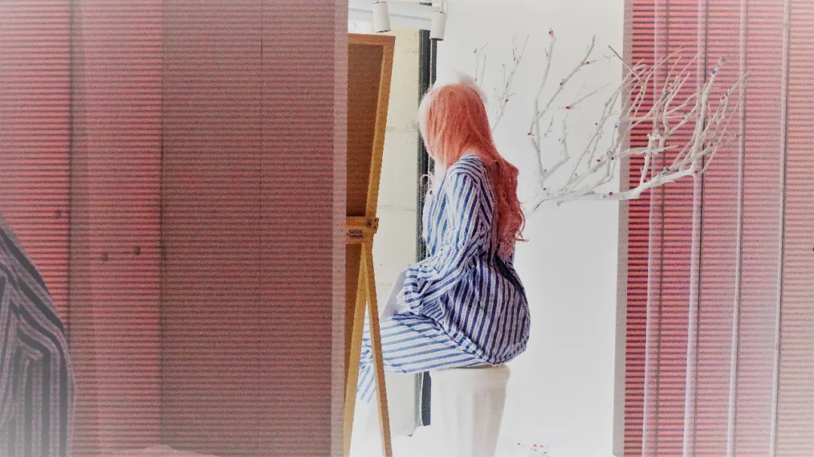
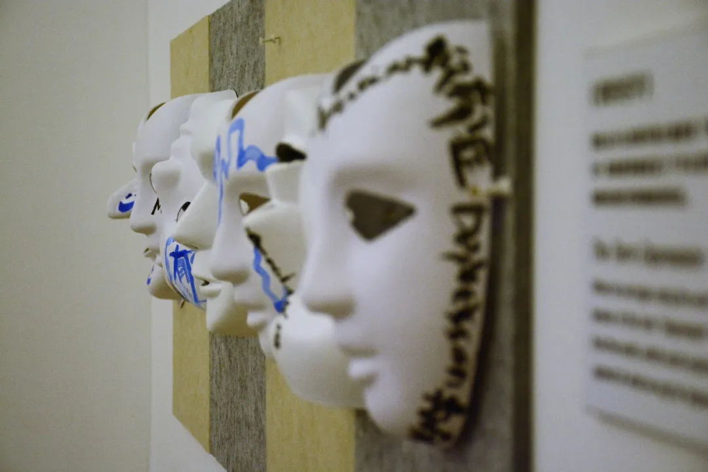
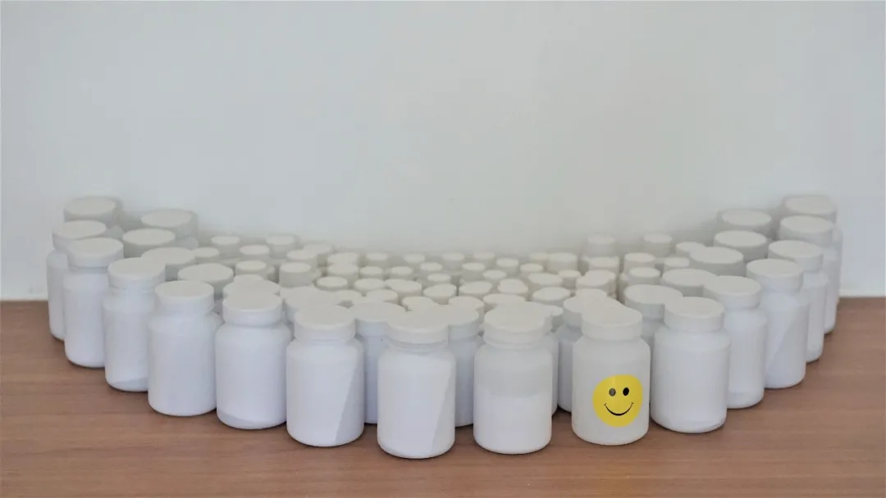
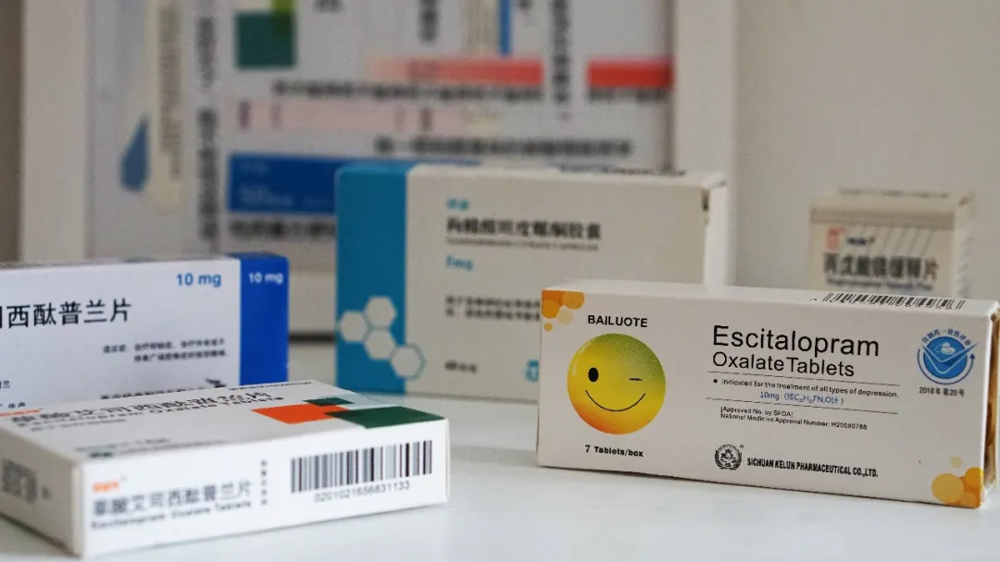
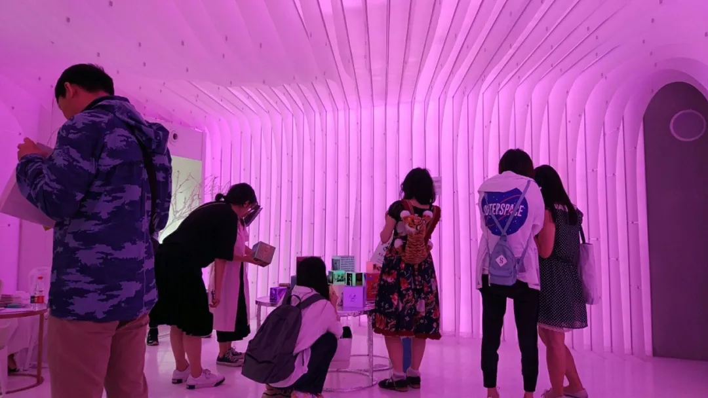
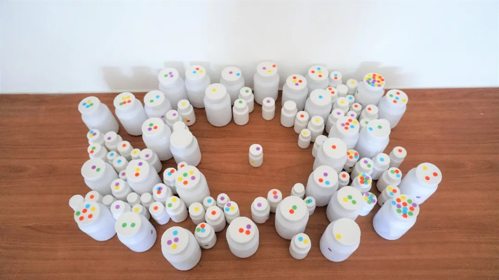 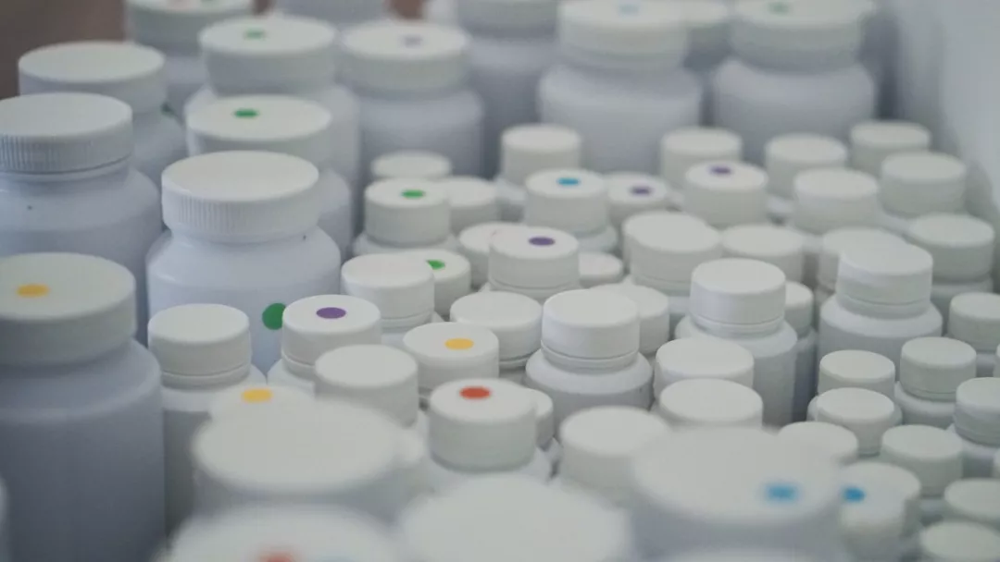
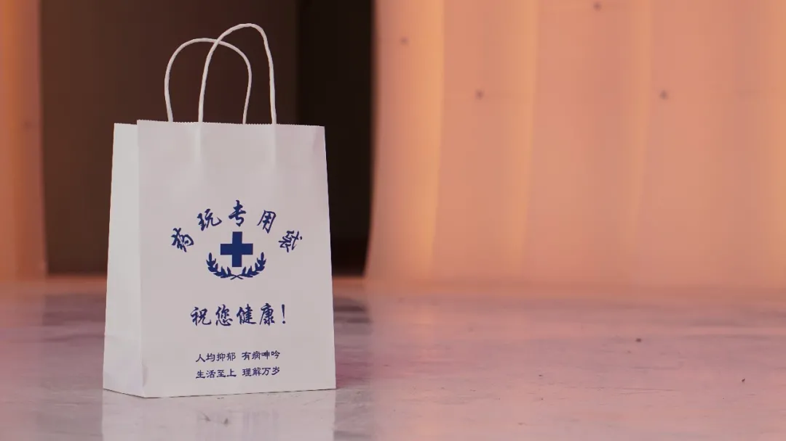
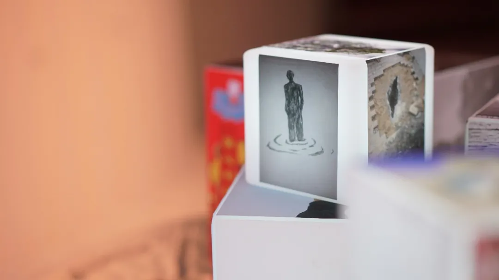
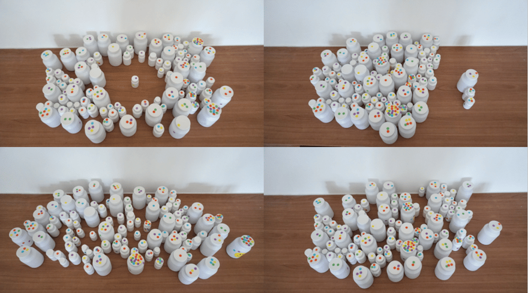
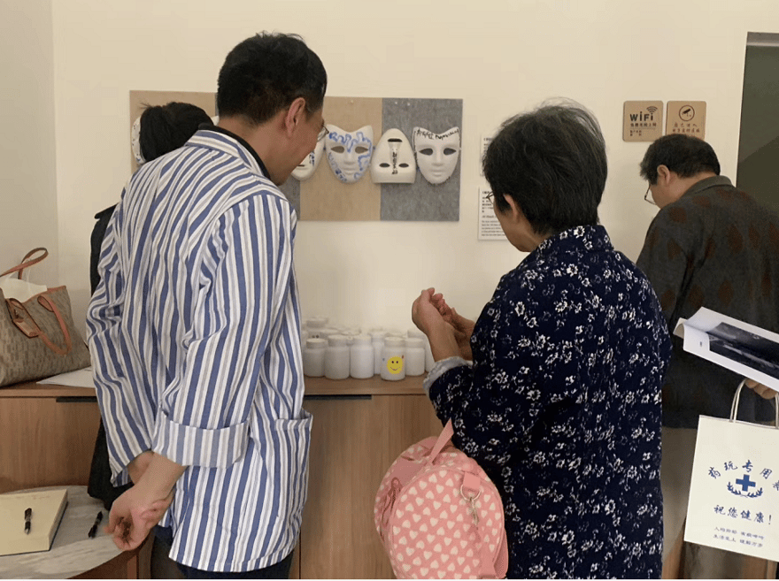
药玩Pity Party
“药玩PityParty”是以精神健康为主题的公共艺术项目，由致力于精神健康公众教育的公益组织“刺鸟栖息地”发起，与全国第一家关注抑郁症的公益组织“上海郁今香”合作，通过一系列的活动普及常识促进对话：在艺术展览中用空间呈现关于精神健康议题的社会调查报告，借由影像放映看见他人和自我，同时还集中举办互助团体、志愿者赋能、行业交流会、读书会等活动。在这个充满焦虑和抑郁的时代，创造一个安全开放的精神健康话题讨论场所。药玩不单单属于某一个特定群体，它欢迎每一个愿意讲述和聆听的人。
主办方介绍
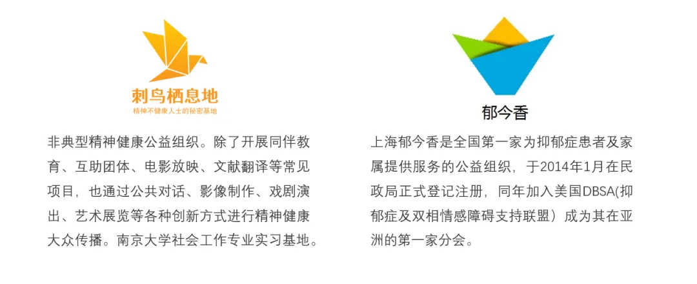